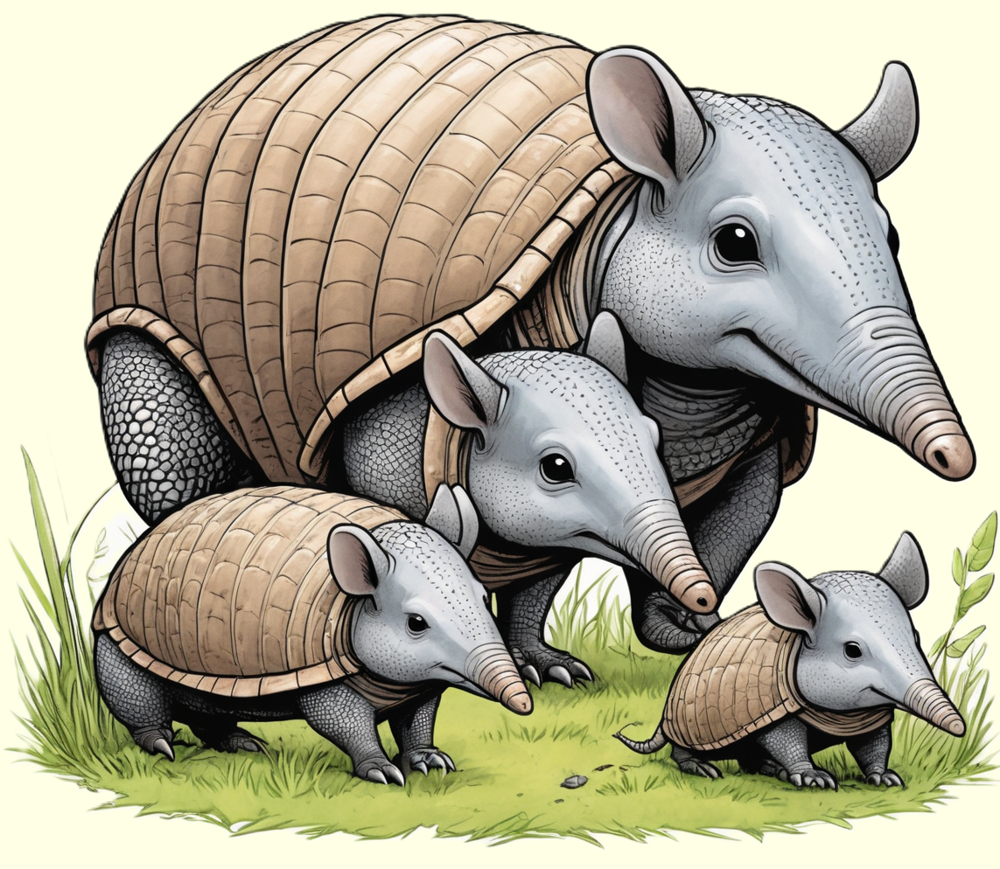

Das Gürteltier, ein faszinierendes Säugetier, beeindruckt mit seinem gepanzerten Rücken und seiner Grabefähigkeit.
Entdecke die aufregende Welt dieser kleinen Panzerträger und erfahre, wie sie in den trockenen Gebieten Südamerikas leben.

Einzigartige Säugetiere mit Panzer
Gürteltiere, auch als Panzerschweine bekannt, sind bemerkenswerte Säugetiere, die in den Amerikas beheimatet sind. Ihr auffälligstes Merkmal ist der harte Panzer, der ihren Rücken bedeckt. Dieser Panzer, bestehend aus Knochenplatten, bietet den Gürteltieren nicht nur Schutz vor Raubtieren, sondern spielt auch eine entscheidende Rolle bei der Regulierung ihrer Körpertemperatur. Gürteltiere sind hauptsächlich in Südamerika zu finden, bewohnen jedoch verschiedene Lebensräume, von Wäldern über Grasländer bis hin zu trockenen Wüstengebieten. Ihre vielseitige Ernährung umfasst Insekten, Würmer, Früchte und Pflanzen. Mit ihren kräftigen Krallen graben sie nach Nahrung im Erdreich, wodurch sie auch den Ruf von "Panzergräbern" erhalten haben.
Die Artenvielfalt der Gürteltiere erstreckt sich über verschiedene Größen, angefangen von winzigen Arten wie dem Sechsbinden-Gürteltier bis hin zu größeren Arten wie dem Riesengürteltier. Gürteltiere sind nachtaktive Tiere und verbringen den größten Teil ihres Tages in selbst gegrabenen Höhlen, um der Hitze zu entkommen und sich vor Feinden zu verbergen. Ihre Panzer sind nicht nur schützende Rüstungen, sondern auch eine visuelle Darstellung der Vielfalt und Anpassungsfähigkeit dieser faszinierenden Säugetiere.
Fortpflanzungsstrategien und Herausforderungen
Die Fortpflanzung bei Gürteltieren ist je nach Art unterschiedlich, aber die meisten Arten bringen ein bis vier Jungtiere zur Welt. Die Tragzeit variiert zwischen 60 und 120 Tagen, und die Jungen kommen voll entwickelt zur Welt, mit einem weichen Panzer, der mit der Zeit aushärtet. In einigen Arten kümmern sich die Mütter intensiv um ihre Nachkommen, während andere Arten eher solitär leben. Trotz ihrer robusten Panzer stehen Gürteltiere verschiedenen Bedrohungen gegenüber, darunter Lebensraumverlust, Jagd und Verkehrsunfälle. Einige Arten gelten als gefährdet oder vom Aussterben bedroht, was den Schutz ihrer natürlichen Lebensräume und die Sensibilisierung für ihre ökologische Bedeutung umso wichtiger macht. Maßnahmen zur Erhaltung der Gürteltiere umfassen das Schaffen von Schutzgebieten, den nachhaltigen Umgang mit Lebensräumen und den Schutz vor Wilderei.